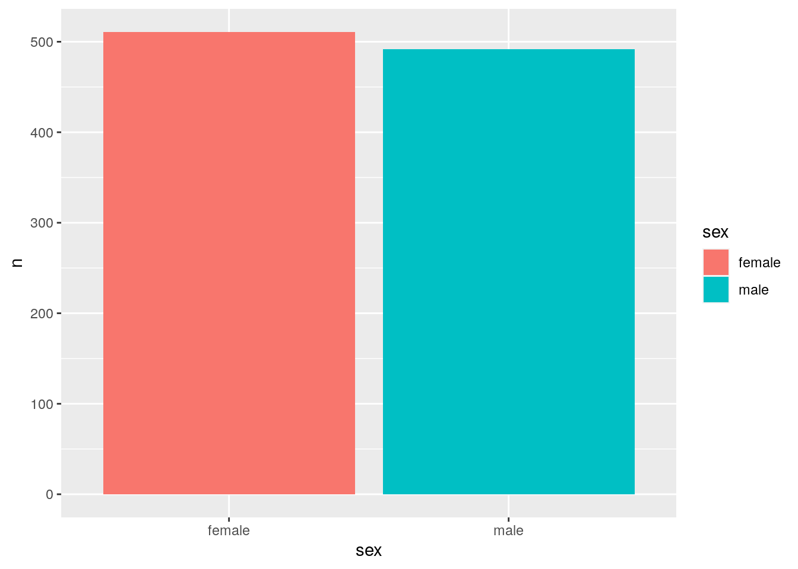
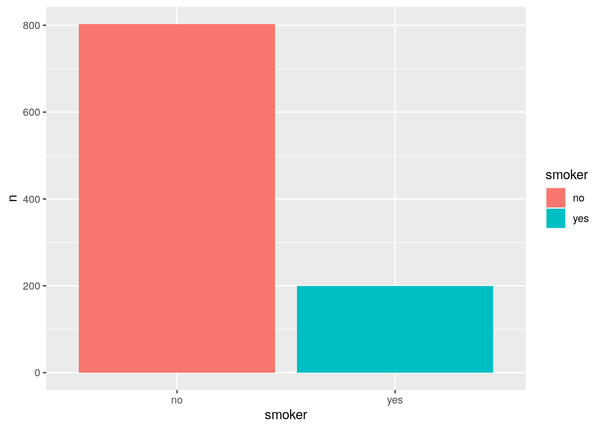
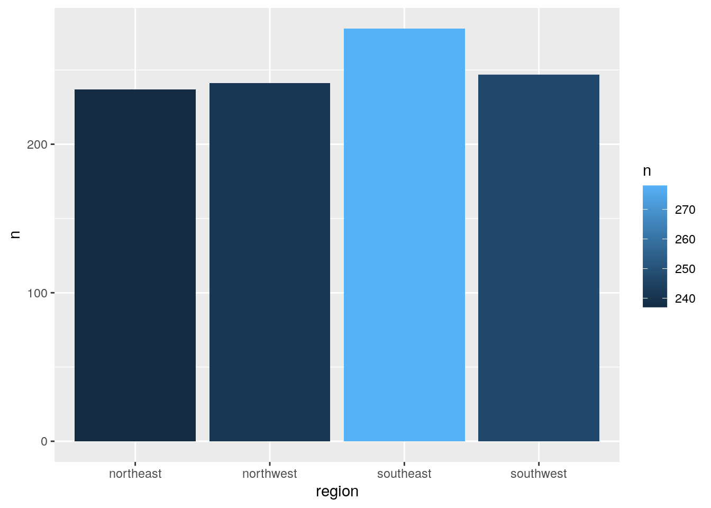
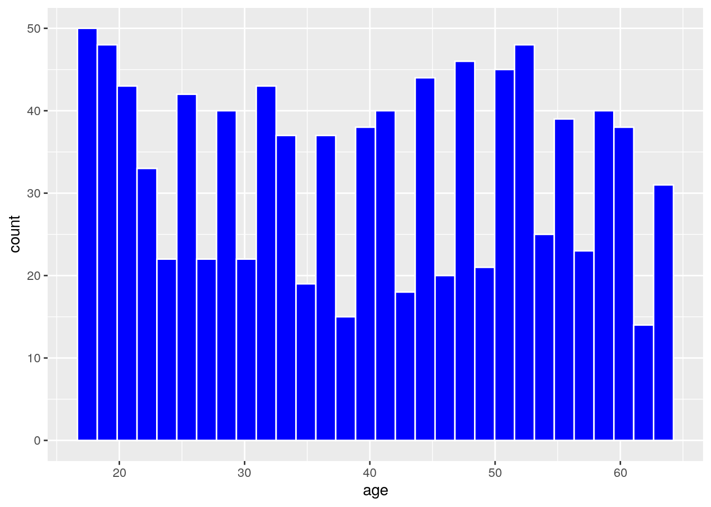
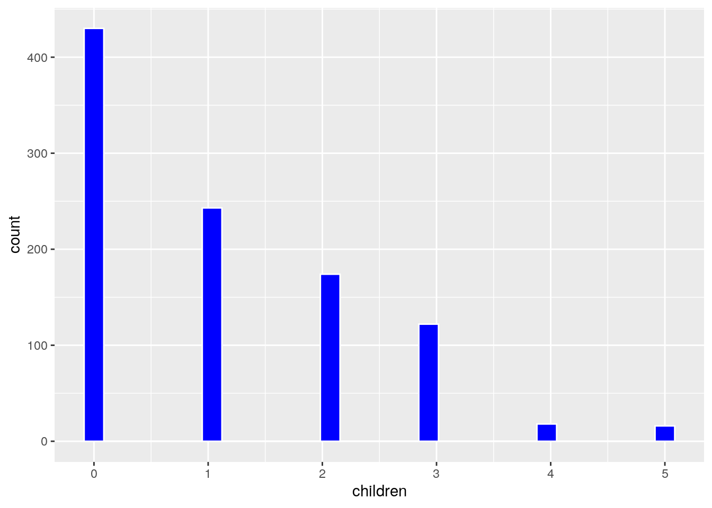
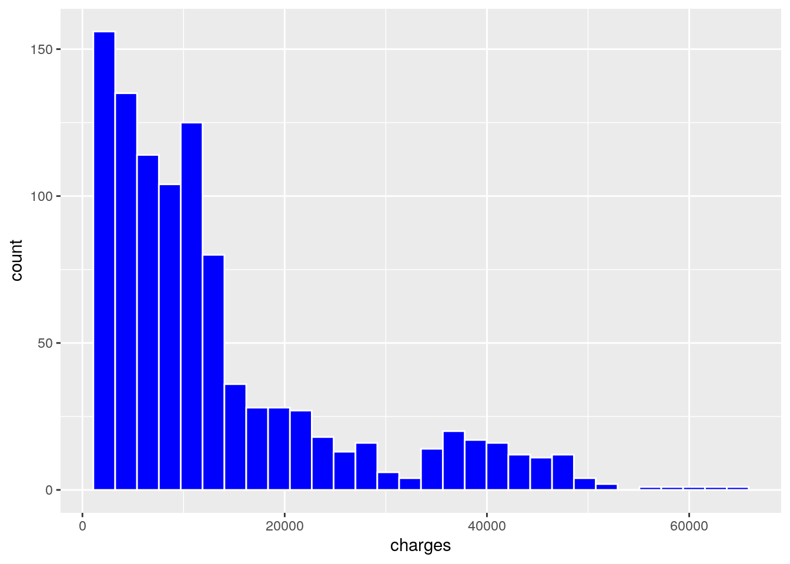

Projeto de Aprendizado de Máquina no R
Entendimento do problema
O presente projeto de aprendizado de máquina, tem como objetivo predizer os custos médicos. O conjunto de dados possui as seguintes colunas:
- age: Idade do paciente;
- sex: Sexo do paciente;
- bmi: Indice de massa corporal;
- children: Número de dependentes;
- smoker: Se fuma ou não;
- region: Área residencial nos Estados Unidos;
- charges: Custos médicos.
Bibliotecas utilizadas
Para realizar a análise, serão utilizadas as seguintes bibliotecas:
| pacotes | descricao_pacotes |
|---|---|
| skimr | Pacote para resumos descritivos |
| tidyverse | Conjunto de pacotes para visualização e manipulação dos dados |
| tidymodels | Pacotes para as etapas de aprendizado de máquina |
| reactable | criação de tabelas interativas |
Para a realização do download dos pacotes listados acima, deve-se em primeiro lugar ter instalado o Rstudio. Feito isso, basta colocar os seguintes comandos na barra de console:
install.packages(‘skimr’)
install.packages(‘tidyverse’)
install.packages(‘tidymodels’)
install.packages(‘ranger’)
install.packages(‘kknn’)
install.packages(‘reactable’)
Coleta de dados
A aquisição dos dados se deu pelo site kaggle. Os dados estão em um arquivo .csv:
library(skimr)
library(tidymodels)## ── Attaching packages ────────────────────────────────────── tidymodels 0.2.0 ──## ✔ broom 0.8.0 ✔ recipes 0.2.0
## ✔ dials 0.1.1 ✔ rsample 0.1.1
## ✔ dplyr 1.0.9 ✔ tibble 3.1.7
## ✔ ggplot2 3.3.6 ✔ tidyr 1.2.0
## ✔ infer 1.0.2 ✔ tune 0.2.0
## ✔ modeldata 0.1.1 ✔ workflows 0.2.6
## ✔ parsnip 0.2.1 ✔ workflowsets 0.2.1
## ✔ purrr 0.3.4 ✔ yardstick 1.0.0## ── Conflicts ───────────────────────────────────────── tidymodels_conflicts() ──
## ✖ purrr::discard() masks scales::discard()
## ✖ dplyr::filter() masks stats::filter()
## ✖ dplyr::lag() masks stats::lag()
## ✖ recipes::step() masks stats::step()
## • Search for functions across packages at https://www.tidymodels.org/find/library(tidyverse)## ── Attaching packages ─────────────────────────────────────── tidyverse 1.3.1 ──## ✔ readr 2.1.2 ✔ forcats 0.5.1
## ✔ stringr 1.4.0## ── Conflicts ────────────────────────────────────────── tidyverse_conflicts() ──
## ✖ readr::col_factor() masks scales::col_factor()
## ✖ purrr::discard() masks scales::discard()
## ✖ dplyr::filter() masks stats::filter()
## ✖ stringr::fixed() masks recipes::fixed()
## ✖ dplyr::lag() masks stats::lag()
## ✖ readr::spec() masks yardstick::spec()df = read.csv('insurance.csv')Divisão dos dados
Antes de iniciar a divisão, vamos obervar se há valores nulos na variável alvo.
skim(df) %>% yank('numeric') %>% select(skim_variable,n_missing, complete_rate, mean, sd)Variable type: numeric
| skim_variable | n_missing | complete_rate | mean | sd |
|---|---|---|---|---|
| age | 0 | 1 | 39,21 | 14,05 |
| bmi | 0 | 1 | 30,66 | 6,10 |
| children | 0 | 1 | 1,09 | 1,21 |
| charges | 0 | 1 | 13270,42 | 12110,01 |
A notação com o operador ‘%>%’ também chamado de pipe será utilizada até o fim do projeto. Ela é proviniente do pacote dplyr dentro do pacote tidyverse e tem como função pegar o valor a esquerda e aplicar alguma outra funcionalidade. Como no exemplo acima, que pegará o resumo feito pela função do lado esquerdo e filtrar apenas as colunas numéricas.
Observe também que não há valores ausentes da coluna alvo, logo podemos realizar a divisão.
set.seed(42) # tomando uma semente constante
divisao_dados = initial_split(df)
df_treino = training(divisao_dados)
df_teste = testing(divisao_dados)Análise exploratória
Observe abaixo uma análise descritiva dos dados:
skim(df) %>% yank('numeric') %>% select(skim_variable,n_missing, complete_rate, mean, sd)Variable type: numeric
| skim_variable | n_missing | complete_rate | mean | sd |
|---|---|---|---|---|
| age | 0 | 1 | 39,21 | 14,05 |
| bmi | 0 | 1 | 30,66 | 6,10 |
| children | 0 | 1 | 1,09 | 1,21 |
| charges | 0 | 1 | 13270,42 | 12110,01 |
skim(df_treino) %>% yank('character')Variable type: character
| skim_variable | n_missing | complete_rate | min | max | empty | n_unique | whitespace |
|---|---|---|---|---|---|---|---|
| sex | 0 | 1 | 4 | 6 | 0 | 2 | 0 |
| smoker | 0 | 1 | 2 | 3 | 0 | 2 | 0 |
| region | 0 | 1 | 9 | 9 | 0 | 4 | 0 |
Agora vamos observar o comportamento de algumas variáveis. Para a visualização dos dados, foi utilizada o pacote ggplot2.
grafico = df_treino %>% count(sex) %>% ggplot(aes(x=sex,y=n, fill = sex)) + geom_bar(stat='identity')
grafico
grafico = df_treino %>% count(smoker) %>% ggplot(aes(x = smoker,y=n, fill = smoker)) + geom_bar(stat ='identity')
grafico
grafico = df_treino %>% count(region) %>% ggplot(aes(x = region, y = n, fill = n)) + geom_bar(stat = 'identity')
grafico
grafico = df_treino %>% ggplot(aes(x = age)) + geom_histogram(fill = 'blue', color = 'white')
grafico## `stat_bin()` using `bins = 30`. Pick better value with `binwidth`.
grafico = df_treino %>% ggplot(aes(x =children)) + geom_histogram(fill = 'blue', color = 'white')
grafico## `stat_bin()` using `bins = 30`. Pick better value with `binwidth`.
grafico = df_treino %>% ggplot(aes(x =charges)) + geom_histogram(fill = 'blue', color = 'white')
grafico## `stat_bin()` using `bins = 30`. Pick better value with `binwidth`.
Imputação e transformação dos dados
Para a imputação e transformação dos dados, foi utilizado o pacote recipes do tidymodels:
receita = recipe(charges ~ .,df_treino) %>%
step_impute_median(all_numeric_predictors()) %>%
step_impute_mode(all_nominal_predictors()) %>%
step_dummy(all_nominal_predictors()) %>%
step_normalize(all_numeric_predictors())
receita## Recipe
##
## Inputs:
##
## role #variables
## outcome 1
## predictor 6
##
## Operations:
##
## Median imputation for all_numeric_predictors()
## Mode imputation for all_nominal_predictors()
## Dummy variables from all_nominal_predictors()
## Centering and scaling for all_numeric_predictors()O recipes funciona como uma receita de bolo: primeiro definimos qual variável é a alvo e quais são as preditoras, feito isso os proximos passos são definir quais imputações e transformações utilizar. Atenção, o processo de transformação é sempre no final das imputações.
Comparação entre modelos
Vamos utilizar a técnica de validação cruzada para o processo de treino e comparação de modelos.
set.seed(42)
validacao_cruzada = vfold_cv(df_treino,v = 5)Para a implementação dos modelos, utilizamos o pacote pasnip incluida no tidymodels. A estruturação do pacote pasnip se comporta da seguinte maneira:
modelo %>% modo(classificação ou regressão) %>% motor(engine)
O modelo seria qual modelo de aprendizado de máquina escolher, como por exemplo o random forest, o modo pode ser classificação ou regressão, já o motor seria qual pacote no R que deve ser usado para implementar o modelo
random_forest = rand_forest() %>% set_mode('regression') %>% set_engine('ranger')
random_forest## Random Forest Model Specification (regression)
##
## Computational engine: rangerlinear = linear_reg() %>% set_mode('regression') %>% set_engine('lm')
linear## Linear Regression Model Specification (regression)
##
## Computational engine: lmvizinho_proximo = nearest_neighbor() %>% set_mode('regression') %>% set_engine('kknn')Implementado os modelos, agora vamos criar um container para juntar todo o pré-processamento com os dados de treino:
wf= workflow() %>% add_recipe(receita)Agora vamos observar os resultados de cada modelo:
random_resultado = wf %>% add_model(random_forest) %>%
fit_resamples( resamples = validacao_cruzada,
control = control_resamples(save_pred = T, verbose = F),
metrics = metric_set(rmse))
collect_metrics(random_resultado)## # A tibble: 1 × 6
## .metric .estimator mean n std_err .config
## <chr> <chr> <dbl> <int> <dbl> <chr>
## 1 rmse standard 5336. 5 239. Preprocessor1_Model1linear_resultado = wf %>% add_model(linear) %>%
fit_resamples(resamples = validacao_cruzada,
control = control_resamples(save_pred = T,verbose = F),
metrics = metric_set(rmse))
collect_metrics(linear_resultado)## # A tibble: 1 × 6
## .metric .estimator mean n std_err .config
## <chr> <chr> <dbl> <int> <dbl> <chr>
## 1 rmse standard 6130. 5 272. Preprocessor1_Model1vizinho_resultado = wf %>% add_model(vizinho_proximo) %>%
fit_resamples(resamples = validacao_cruzada,
control = control_resamples(save_pred = T, verbose = F),
metrics = metric_set(rmse))
collect_metrics(vizinho_resultado)## # A tibble: 1 × 6
## .metric .estimator mean n std_err .config
## <chr> <chr> <dbl> <int> <dbl> <chr>
## 1 rmse standard 5757. 5 247. Preprocessor1_Model1Observe que o random forest obteve o melhor desempenho, portanto será escolhido.
Aprimoramento do modelo
Para o aprimoramento do modelo, foi considerado dois hiperparâmetros:
mtry: número de atributos aleatóriamente selecionados para serem usadas em cada divisão dos dados.
trees: Quantidade de árvores a ser utilizada.
random_tune = rand_forest( mtry = tune(),trees = tune()) %>%
set_mode('regression') %>%
set_engine('ranger')
modelo_final = wf %>% add_model(random_tune) # criando o modelo final
random_grid = expand.grid(
mtry = c(1,3,4),
trees = c(100,200,300,400,500)) # criando a grade
tunagem = modelo_final %>% tune_grid(resamples = validacao_cruzada,
grid = random_grid) # implementando a tunagem
show_best(tunagem, metric = 'rmse') # mostrando os melhores resultados ## # A tibble: 5 × 8
## mtry trees .metric .estimator mean n std_err .config
## <dbl> <dbl> <chr> <chr> <dbl> <int> <dbl> <chr>
## 1 4 400 rmse standard 4721. 5 232. Preprocessor1_Model12
## 2 4 500 rmse standard 4724. 5 228. Preprocessor1_Model15
## 3 4 300 rmse standard 4736. 5 238. Preprocessor1_Model09
## 4 4 200 rmse standard 4740. 5 239. Preprocessor1_Model06
## 5 4 100 rmse standard 4752. 5 258. Preprocessor1_Model03Teste final
Por fim, vamos implementar o teste final do modelo. Para isso usamos o comando finalize_workflow para não só usar o modelo final com a tunagem, mas também para realizar o teste.
modelo_finalizado = finalize_workflow(modelo_final,
select_best(tunagem, metric = 'rmse')) %>%
last_fit(divisao_dados, metrics = metric_set(rmse))
collect_metrics(modelo_finalizado)## # A tibble: 1 × 4
## .metric .estimator .estimate .config
## <chr> <chr> <dbl> <chr>
## 1 rmse standard 4586. Preprocessor1_Model1Observe que ele se mostrou com um bom desempenho.